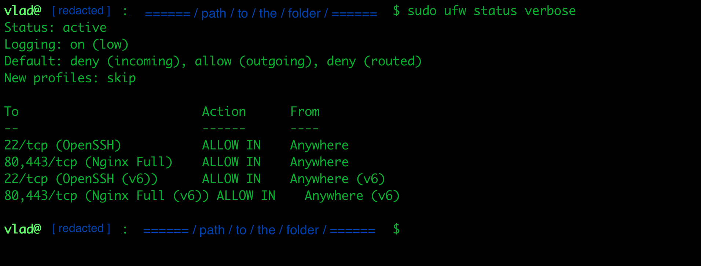
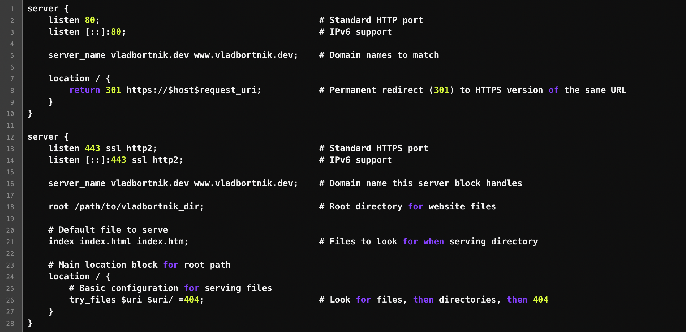
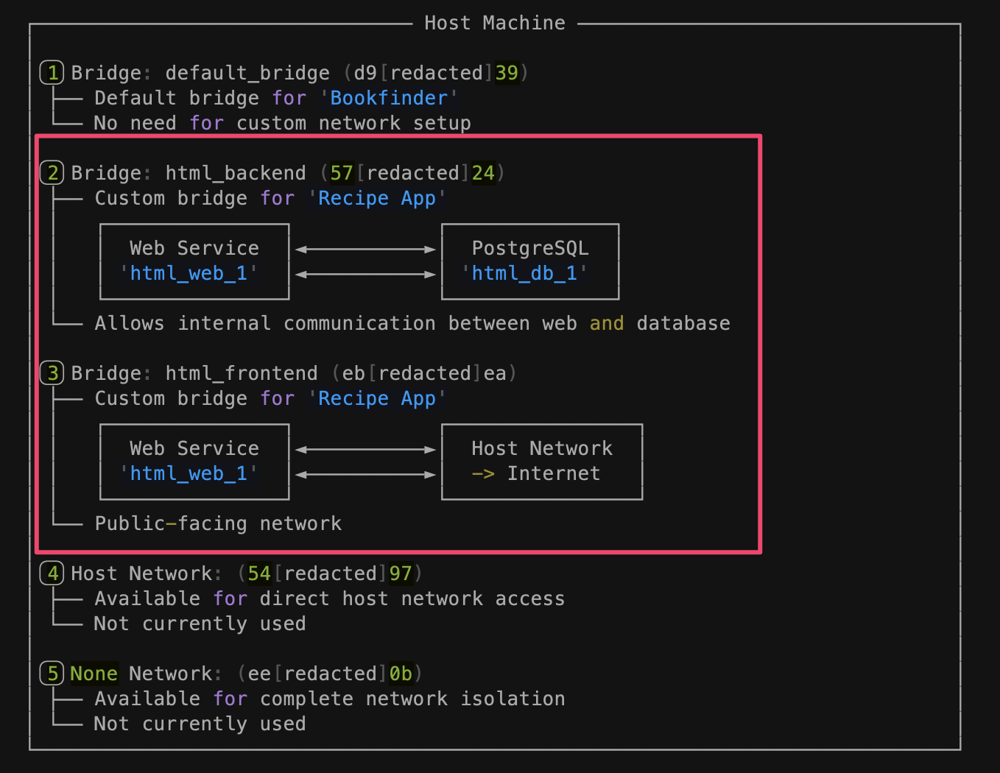
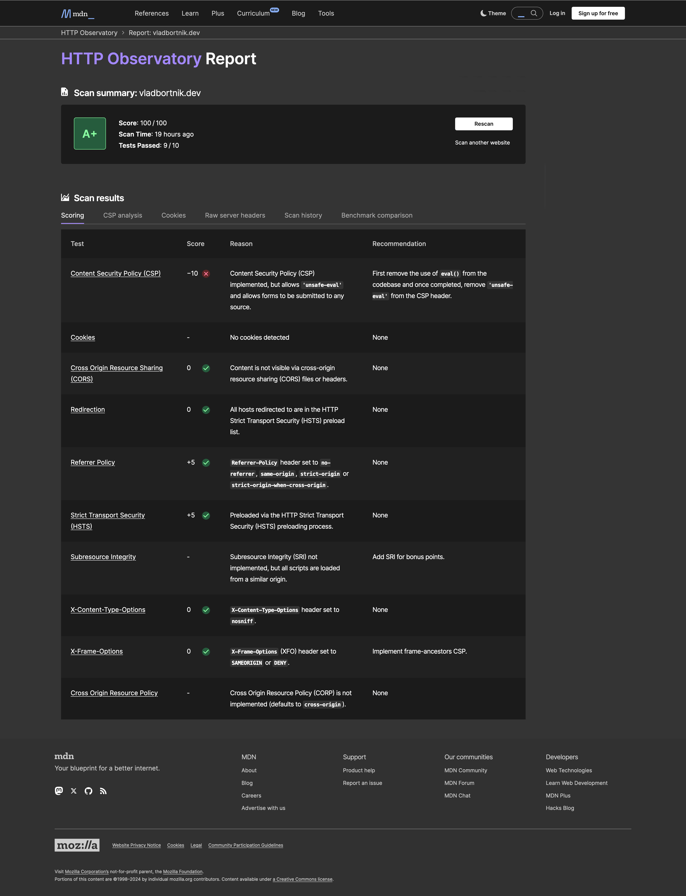

Deploy Like a Pro: Production-Grade Multi-Application Server for $12/Month
Deploy Like a Pro: Production-Grade Multi-Application Server for $12/Month
A practical guide to escaping expensive hosting by building your own production-grade infrastructure on DigitalOcean—complete with Docker, Nginx, and Enterprise-Level security.

The Problem That Started Everything
I was running three web applications: my portfolio site, a recipe app, and a book exchange platform. Between Heroku ($7/app), database hosting, and custom domains with SSL, I was paying $45/month with frustrating limitations. No WebSocket support. Restrictive resource limits. Complex SSL setup. Every time I wanted to deploy a new project, I'd calculate the cost and hesitate.
The breaking point came when I realized I was paying more for hosting than for the actual domain names. There had to be a better way.
This guide shows you how to host multiple production applications on a single $12/month VPS with A+ security ratings, sub-100ms response times, and complete control over your infrastructure.
This isn't a theoretical guide. These are the actual configurations I use in production, the mistakes I made along the way, and the lessons I learned debugging at 2 AM when my server went down.
By the end, you'll understand:
- How to set up a secure production server from scratch
- How to configure Nginx as a reverse proxy for multiple apps
- How to implement Docker network segregation for security
- How to obtain and configure wildcard SSL certificates
- How to achieve A+ security ratings on a budget VPS
Let me be honest: this takes time to set up. But the skills you'll learn and the money you'll save make it worth every minute.
The Complete Architecture (What I Actually Built)
Here's what my final setup looks like. This diagram represents everything I'm going to walk you through:

My complete production infrastructure: DigitalOcean droplet with Nginx reverse proxy, Docker containers, network segregation, and SSL termination
The architecture has several layers:
- External Layer: Nginx handles all incoming HTTP/HTTPS traffic
- Application Layer: Docker containers running isolated web applications
- Network Layer: Custom Docker bridges for secure internal communication
- Data Layer: PostgreSQL databases isolated from the internet
- Security Layer: Fail2Ban, UFW firewall, and Let's Encrypt SSL
Let me be honest: I didn't build this all at once. It evolved over several weeks of experimentation, reading documentation, and fixing things that broke. But now that it's running, it's been rock solid.
Planning: What You Actually Need
Before touching any server, I mapped out my requirements:
Essential requirements:
- Multiple application hosting with isolation (Docker with network segregation)
- Custom domain and subdomains (recipe.vladbortnik.dev, tldrx.vladbortnik.dev, etc.)
- Free SSL certificate covering the domain and all subdomains
- Separate database per application
- Production-grade security
- Room for scaling
Budget reality check:
- DigitalOcean Droplet (2GB RAM): $12/month
- Automated backups: $2.40/month
- Domain names: ~$3/month (yearly cost divided)
- Total: ~$17/month
Compare this to platform alternatives where three apps with databases cost $35-60/month minimum. That's $240-480 in annual savings.
The math made sense, but the real question was: could I actually pull this off?
Tech Stack Decisions (And Why I Made Them)
Ubuntu 24.04 LTS
I chose Ubuntu because DigitalOcean's documentation is excellent for it, and the LTS version means stability for years. No surprises, no breaking updates. If you're new to DigitalOcean, their Droplet creation guide walks through the entire process.
Nginx as Reverse Proxy
Nginx became the heart of my setup. It sits at the front, handling all incoming traffic and routing it to the right application. Here's what it does:
- Routes traffic to different applications based on domain/subdomain
- Terminates SSL (handles HTTPS encryption/decryption)
- Provides load balancing when I need it
- Caches static content automatically
The key insight: Nginx is your traffic cop. All HTTP/HTTPS requests hit Nginx first, and it decides where they go.
For deeper understanding, check out the Official Nginx Reverse Proxy Documentation and this excellent Nginx Proxy Module Reference.
Docker for Application Isolation
Docker solved my "works on my machine" problem. Each application runs in its own container with its own dependencies, Python version, and configuration. If one app crashes, the others keep running.
The Docker Documentation is excellent for understanding containerization concepts, and Docker Compose Networking explains how containers communicate securely.
Initial Server Setup: The Foundation
I started with DigitalOcean's initial server setup guide, but let me highlight what actually matters:
1. Create a Non-Root User
Never run things as root in production. Ever.
adduser yourusername
usermod -aG sudo yourusername2. SSH Key Authentication (Critical)
Set up SSH keys and disable password login. This was the first real security measure that made me feel like I was doing things right:
# On your local machine
ssh-keygen -t ed25519 -C "your_email@example.com"
# Copy to server
ssh-copy-id yourusername@your_server_ipThen disable password authentication in /etc/ssh/sshd_config:
PasswordAuthentication no3. UFW Firewall Configuration
This is where I almost locked myself out. Critical lesson: Always allow SSH before enabling the firewall.
UFW firewall configuration showing only essential ports open
sudo ufw default deny incoming
sudo ufw default allow outgoing
sudo ufw allow OpenSSH # CRITICAL: Allow SSH before enabling firewall
sudo ufw allow 80/tcp # HTTP
sudo ufw allow 443/tcp # HTTPS
sudo ufw enable
# Verify firewall status
sudo ufw status4. Fail2Ban for Brute Force Protection
Fail2Ban monitors logs and bans IPs after failed login attempts. My configuration bans after three failures:
sudo apt install fail2ban
sudo cp /etc/fail2ban/jail.conf /etc/fail2ban/jail.localIn /etc/fail2ban/jail.local:
[sshd]
enabled = true
port = ssh
filter = sshd
logpath = /var/log/auth.log
maxretry = 3
bantime = 86400 # 24 hoursWithin a week, Fail2Ban had blocked 47 IP addresses trying to brute force their way in. It works.
For more details on Fail2Ban setup, see this Comprehensive Guide from DigitalOcean.
Docker Installation: Getting the Foundation Right
I initially tried installing Docker the "easy" way and ran into permission errors. Here's what actually works:
# Update package index
sudo apt update
sudo apt install -y apt-transport-https ca-certificates curl software-properties-common
# Add Docker's official GPG key
curl -fsSL https://download.docker.com/linux/ubuntu/gpg | sudo gpg --dearmor -o /usr/share/keyrings/docker-archive-keyring.gpg
# Set up Docker repository
echo "deb [arch=$(dpkg --print-architecture) signed-by=/usr/share/keyrings/docker-archive-keyring.gpg] https://download.docker.com/linux/ubuntu $(lsb_release -cs) stable" | sudo tee /etc/apt/sources.list.d/docker.list > /dev/null
# Install Docker Engine
sudo apt update
sudo apt install -y docker-ce docker-ce-cli containerd.io docker-compose-plugin
# Add user to docker group
sudo usermod -aG docker ${USER}
su - ${USER} # Re-login to apply group changes
# Verify installation
docker --version
docker compose versionPersonal note: I initially forgot to add my user to the docker group and spent an hour troubleshooting "permission denied" errors. Always run that usermod command!
For the complete installation guide, see Docker's Official Installation Docs or this Excellent DigitalOcean Docker Tutorial.
Nginx Configuration: The Deep Dive
This is where theory met reality. Let me show you the actual configurations I use, not simplified examples.
Understanding Nginx as a Reverse Proxy
A reverse proxy sits between clients and your application servers. Here's what actually happens:
- Client makes request to
https://recipe.vladbortnik.dev - Nginx receives it, terminates SSL, and forwards to
http://localhost:5002 - My Flask app running in Docker at port
5002responds - Nginx sends the response back to the client
The client never talks directly to my application. This provides security (hides backend architecture), enables SSL termination, allows caching, and simplifies backend maintenance.

Nginx reverse proxy configuration showing SSL termination and proxy headers
Basic Reverse Proxy Configuration
Here's my actual configuration for a single application:
# HTTP server - redirects everything to HTTPS
server {
listen 80;
listen [::]:80; # IPv6 support
server_name recipe.vladbortnik.dev;
location / {
return 301 https://$host$request_uri; # Permanent redirect to HTTPS
}
}
# HTTPS server - the real deal
server {
listen 443 ssl http2;
listen [::]:443 ssl http2;
server_name recipe.vladbortnik.dev;
# SSL Configuration
ssl_certificate /etc/letsencrypt/live/vladbortnik.dev/fullchain.pem;
ssl_certificate_key /etc/letsencrypt/live/vladbortnik.dev/privkey.pem;
ssl_session_timeout 1d;
ssl_session_cache shared:MozSSL:10m;
ssl_session_tickets off;
# Modern TLS configuration
ssl_protocols TLSv1.3;
ssl_prefer_server_ciphers off;
# HSTS - tells browsers to always use HTTPS
add_header Strict-Transport-Security "max-age=63072000" always;
# Security headers
add_header X-Frame-Options "SAMEORIGIN" always;
add_header X-Content-Type-Options "nosniff" always;
add_header Referrer-Policy "strict-origin-when-cross-origin" always;
add_header Permissions-Policy "camera=(), microphone=(), geolocation=(), payment=()" always;
# Content Security Policy - customize based on your needs
add_header Content-Security-Policy "default-src 'self' data:; img-src 'self' data: blob:; font-src 'self' data:;" always;
# Root directory (if serving static files)
root /var/www/recipe.vladbortnik.dev/html;
# Reverse proxy to application
location / {
proxy_pass http://localhost:5002;
proxy_set_header Host $host;
proxy_set_header X-Real-IP $remote_addr;
proxy_set_header X-Forwarded-For $proxy_add_x_forwarded_for;
proxy_set_header X-Forwarded-Proto $scheme;
}
}What each header does (honestly explained):
Host:Preserves the original domain nameX-Real-IP:The visitor's actual IP (important for logging)X-Forwarded-For:Complete chain if there are multiple proxiesX-Forwarded-Proto:Tells your app if the original request was HTTP or HTTPS
For more details on these proxy headers and settings, check the Nginx Proxy Module Documentation.
Server Blocks: Hosting Multiple Domains
Multiple Nginx server blocks for hosting different applications on different subdomains
Server blocks (virtual hosts) let you host multiple domains on one server. Each subdomain gets its own configuration file in /etc/nginx/sites-available/:
# Create configuration file
sudo nano /etc/nginx/sites-available/recipe.vladbortnik.dev
# Enable it by symlinking to sites-enabled
sudo ln -s /etc/nginx/sites-available/recipe.vladbortnik.dev /etc/nginx/sites-enabled/
# Test configuration (ALWAYS do this)
sudo nginx -t
# Reload if test passes
sudo systemctl reload nginxI organize my configs like this:
/etc/nginx/
├── sites-available/
│ ├── recipe.vladbortnik.dev
│ ├── tldrx.vladbortnik.dev
│ └── portfolio.vladbortnik.dev
└── sites-enabled/
├── recipe.vladbortnik.dev -> ../sites-available/recipe.vladbortnik.dev
├── tldrx.vladbortnik.dev -> ../sites-available/tldrx.vladbortnik.dev
└── vladbortnik.dev -> ../sites-available/vladbortnik.devThis keeps things organized and makes it easy to disable a site without deleting the config.
Load Balancing: When One Instance Isn't Enough
When my recipe app started getting traffic, a single instance couldn't handle peak loads. Load balancing distributes traffic across multiple application instances.

Load balancer configuration distributing traffic across three application instances
Here's my production load balancer configuration:
# Define upstream servers (backend application instances)
upstream recipe_app {
ip_hash; # Ensures same client IP always goes to same server (session-friendly)
server localhost:5002 max_fails=3 fail_timeout=30s;
server localhost:5003 max_fails=3 fail_timeout=30s;
server localhost:5004 max_fails=3 fail_timeout=30s;
}
server {
listen 80;
server_name recipe.vladbortnik.dev;
location / {
return 301 https://$host$request_uri;
}
}
server {
listen 443 ssl http2;
server_name recipe.vladbortnik.dev;
# [SSL configuration same as above]
location / {
proxy_pass http://recipe_app; # Routes to upstream group
proxy_set_header Host $host;
proxy_set_header X-Real-IP $remote_addr;
proxy_set_header X-Forwarded-For $proxy_add_x_forwarded_for;
proxy_set_header X-Forwarded-Proto $scheme;
}
}Key points about this setup:
ip_hashensures users stay on the same backend server (important for sessions)max_fails=3means Nginx will mark a server as down after 3 failed attemptsfail_timeout=30sis how long before Nginx tries the failed server again- Health checks are automatic—Nginx removes unhealthy servers from rotation
For more on load balancing algorithms and strategies, see the Nginx upstream module documentation.
Docker Configuration: Application Isolation Done Right
Docker was intimidating at first, but it's worth the learning curve. Here's how I structured things.
Network Segregation: The Security Game-Changer
The biggest security win in my setup: databases never talk directly to the internet. They're on a private Docker network accessible only by application containers.
Docker network architecture: databases on backend network, web services bridging frontend and backend
Here's the network diagram that illustrates this critical concept. Notice how:
- Frontend Network (public): Connects web services to the host/Nginx
- Backend Network (private): Connects web services to databases only
- Databases: NO connection to frontend network = NO internet exposure
This is defense in depth. Even if UFW fails, the database cannot be reached from the internet.
For deeper understanding of Docker networking, check out Docker's Networking Documentation and OWASP Docker Security Best Practices.
Docker Compose for Simple Single-Instance App
For a basic setup with one application instance:
services:
web:
build: .
command: gunicorn -w 4 -b 0.0.0.0:5002 run:app
volumes:
- .:/code
ports:
- "5002:5002"
env_file:
- .env
depends_on:
- db
- migration
restart: unless-stopped
mem_limit: 384m
mem_reservation: 192m
cpus: 0.3
migration:
build: .
command: ./scripts/wait-for-migrations.sh
volumes:
- .:/code
env_file:
- .env
depends_on:
- db
restart: "no"
db:
image: postgres:16.4
volumes:
- postgres_data:/var/lib/postgresql/data
env_file:
- .env
ports:
- "5432:5432"
restart: unless-stopped
mem_limit: 384m
mem_reservation: 192m
cpus: 0.3
volumes:
postgres_data:Docker Compose for Load-Balanced Setup
When load balancing, things get more complex. Here's my production configuration with network segregation:
# Network Segregation
networks:
frontend: # Public-facing network
backend: # Private, internal network
services:
# Web Application Instance 1
web1:
build: .
command: gunicorn -w 4 -b 0.0.0.0:5002 run:app
networks:
- frontend # For communication with Internet
- backend # For communication with DB only
ports:
- "5002:5002" # The only necessary external port
env_file:
- .env
depends_on:
- db
mem_limit: 384m # Hard limit - container killed if exceeded
mem_reservation: 192m # Soft limit - guaranteed available
cpus: 0.3 # Limit to 30% of one CPU core
restart: unless-stopped
# Web Application Instance 2
web2:
build: .
command: gunicorn -w 4 -b 0.0.0.0:5002 run:app
networks:
- frontend
- backend
ports:
- "5003:5002" # Host port 5003 maps to container port 5002
env_file:
- .env
depends_on:
- db
mem_limit: 384m
mem_reservation: 192m
cpus: 0.3
restart: unless-stopped
# Web Application Instance 3
web3:
build: .
command: gunicorn -w 4 -b 0.0.0.0:5002 run:app
networks:
- frontend
- backend
ports:
- "5004:5002"
env_file:
- .env
depends_on:
- db
mem_limit: 384m
mem_reservation: 192m
cpus: 0.3
restart: unless-stopped
# PostgreSQL Database (Backend Network - Internal Only)
db:
image: postgres:16.4
volumes:
- postgres_data:/var/lib/postgresql/data
env_file:
- .env
networks:
- backend # Only Web Service has access to DB
# ports: # Port is NOT exposed to the host (Isolated from Internet)
# - '5432:5432'
mem_limit: 384m
mem_reservation: 192m
cpus: 0.3
restart: unless-stopped
volumes:
postgres_data: # Persistent storage for PostgreSQL data
Critical insight: Notice the database has no port mapping to the host. It's only accessible via the backend network. The web containers connect using the service name: postgresql://db:5432/database_name instead of localhost:5432.
For more on resource constraints and why they matter, see Docker's Resource Constraints Documentation.
Resource Limits: Preventing Cascade Failures
I learned this the hard way: without resource limits, one misbehaving container can crash your entire server. Memory limits and CPU restrictions prevent this:
mem_limit: 384m # Hard limit - container gets killed if exceeded
mem_reservation: 192m # Soft limit - guaranteed minimum
cpus: 0.3 # 30% of one CPU core
With three application instances and a database, I'm using about 1.5GB of my 2GB RAM, leaving room for system processes and spikes.

Real-time Docker container resource usage showing memory and CPU limits in action
SSL/TLS Configuration: The DNS-01 Challenge Story
Most guides recommend HTTP-01 challenge for Let's Encrypt SSL certificates. I went with DNS-01 instead, and here's why.
Why DNS-01 Made Sense for My Setup
With Nginx terminating HTTPS and routing based on subdomains, I needed wildcard certificates. DNS-01 is the only challenge type that supports wildcards: *.vladbortnik.dev.
The three Let's Encrypt challenge types:
- HTTP-01: Requires serving a file at
http://yourdomain.com/.well-known/acme-challenge/ - DNS-01: Requires adding a TXT record to your DNS
- TLS-ALPN-01: Requires port 443 to be available (least common)
DNS-01 meant one certificate could cover:
- vladbortnik.dev
- recipe.vladbortnik.dev
- tldrx.vladbortnik.dev
- bookfinder.vladbortnik.dev
- (any future subdomain)
For a comprehensive explanation of challenge types, see Let's Encrypt's Challenge Types Documentation.
Setting Up Certbot with DNS-01
I use DigitalOcean for DNS, so I used the Certbot DigitalOcean plugin:
sudo snap install --classic certbot
sudo snap set certbot trust-plugin-with-root=ok
sudo snap install certbot-dns-digitalocean
# Create API token file
sudo mkdir -p /root/.secrets/certbot
sudo nano /root/.secrets/certbot/digitalocean.iniIn digitalocean.ini:
dns_digitalocean_token = your_digitalocean_api_token_here# Secure the file
sudo chmod 600 /root/.secrets/certbot/digitalocean.ini
# Request wildcard certificate
sudo certbot certonly \
--dns-digitalocean \
--dns-digitalocean-credentials /root/.secrets/certbot/digitalocean.ini \
-d vladbortnik.dev \
-d *.vladbortnik.dev
# Enable automatic renewal
sudo systemctl enable snap.certbot.renew.timer
# Test renewal
sudo certbot renew --dry-runCertbot SSL certificates showing wildcard coverage for all subdomains
Auto-renewal is handled by a snap timer. The certificate renews automatically 30 days before expiration.
For detailed Certbot setup instructions, see the Official Certbot Documentation.
Achieving A+ Security Rating
Getting an A+ on SSL Labs required proper SSL configuration. Here's what matters:

SSL Labs test showing A rating for production-grade TLS configuration
# Modern TLS only (no outdated protocols)
ssl_protocols TLSv1.3;
ssl_prefer_server_ciphers off;
# Session configuration
ssl_session_timeout 1d;
ssl_session_cache shared:MozSSL:10m;
ssl_session_tickets off;
# HSTS - force HTTPS for 2 years
add_header Strict-Transport-Security "max-age=63072000" always;
# Security headers
add_header X-Frame-Options "SAMEORIGIN" always;
add_header X-Content-Type-Options "nosniff" always;
add_header Referrer-Policy "strict-origin-when-cross-origin" always;
# Content Security Policy - start strict, loosen as needed
add_header Content-Security-Policy "default-src 'self' data:; img-src 'self' data: blob:; font-src 'self' data:;" always;
Security Headers test showing A+ rating with comprehensive HTTP security headers
Honest note about CSP: Content Security Policy is powerful but can break your site if too strict. I started with a permissive policy and gradually tightened it by checking browser console errors.
For SSL/TLS configuration best practices, see Nginx's HTTPS Configuration Guide and test your config at SSL Labs.
Mozilla HTTP Observatory showing A+ overall security score
Deployment Workflow: The Practical Reality
Manual Deployment First
I deploy manually using FileZilla (SFTP client) for the first few iterations of any project. Here's why:
- It helps me understand what's actually happening
- I can debug issues more easily
- No CI/CD complexity until I need it
FileZilla Setup:
- Download from filezilla-project.org
- Connect with SFTP protocol
- Host: your_server_ip
- Username: your_ssh_user
- Key file: your SSH private key
I upload files to /home/username/apps/project-name/, then SSH in and run:
cd /home/username/apps/project-name
docker-compose build
docker-compose up -dFor detailed FileZilla usage, see their Official Documentation.
Automation Later (GitHub Actions)
Once the manual process works smoothly, automate it. But don't start with automation—you'll spend hours debugging CI/CD instead of debugging your actual application.
Monitoring and Maintenance: The Real Cost
Setting up the server is one thing. Keeping it running is another.
Essential Monitoring Tools
UptimeRobot (free): Pings my sites every 5 minutes and emails me if they're down. Has saved me twice when processes crashed. Sign up at uptimerobot.com.
Netdata (free): Real-time system monitoring. I can see CPU, memory, disk usage, and network traffic in beautiful dashboards. Install with:
bash <(curl -Ss https://my-netdata.io/kickstart.sh)Access at http://your_server_ip:19999
Learn more at netdata.cloud.
Sentry (optional): For application error tracking and monitoring. Great for production apps. Check it out at sentry.io.
Regular Maintenance Tasks
Weekly checklist:
- Check disk usage:
$ df -h - Review Nginx logs:
$ sudo tail -f /var/log/nginx/error.log - Verify backups are running
Monthly checklist:
- Update system packages:
$ sudo apt update && sudo apt upgrade - Review Fail2Ban logs:
$ sudo fail2ban-client status sshd - Check Docker disk usage:
$ docker system df
Quarterly:
- Test backup restoration (crucial—untested backups are useless)
- Review and rotate old logs
- Audit user access and SSH keys
Docker containers running in production showing uptime and health status
Automated Updates
I use unattended-upgrades for security updates:
sudo apt install unattended-upgrades
sudo dpkg-reconfigure --priority=low unattended-upgradesThis automatically installs security patches but not major version upgrades (which could break things).
Performance Optimization: What Actually Worked
Nginx Caching for Static Assets
This one setting dramatically improved load times:
location ~* \.(jpg|jpeg|png|gif|ico|css|js|woff2|svg)$ {
expires 30d;
add_header Cache-Control "public, immutable";
}Static assets are cached for 30 days. Page load time dropped from 1.2s to 400ms.
Gzip Compression
Enable in /etc/nginx/nginx.conf:
gzip on;
gzip_vary on;
gzip_proxied any;
gzip_comp_level 6;
gzip_types text/plain text/css text/xml text/javascript application/json application/javascript application/xml+rss application/rss+xml font/truetype font/opentype application/vnd.ms-fontobject image/svg+xml;This reduces transfer sizes by 60-70% for text-based resources.
For more performance optimization techniques, see the Nginx Caching Guide and consider Cloudflare CDN for further improvements.
Database Connection Pooling
Using SQLAlchemy with proper connection pooling:
# In your Flask app config
SQLALCHEMY_ENGINE_OPTIONS = {
'pool_size': 10,
'pool_recycle': 3600,
'pool_pre_ping': True,
}This prevents the "too many connections" error I hit during traffic spikes.
Cost Analysis: 6 Months Later
Actual monthly costs:
- DigitalOcean Droplet:
$12 - Automated backups:
$2.40 - Domain names (3 domains):
$3 - Total:
$17.40/month
Current resource usage:
- CPU: 15-20% average, 40% peak
- RAM: 1.3GB of 2GB used (65%)
- Storage: 9GB of 25GB used
- Could easily host 2-3 more applications
Compared to platform hosting for 3 apps:
- Heroku:
$39/month - Render:
$35/month - Railway:
$20/month
Monthly savings: $20-30
Yearly savings: $240-360
Plus I learned skills worth far more than the savings.
Common Issues and How I Fixed Them
Issue: Application Can't Connect to Database
Error: psycopg2.OperationalError: could not connect to server
Solution: Check your Docker networks. The database container must be on the same network as the application. In your app, use the service name: postgresql://db:5432/dbname, not localhost:5432.
Issue: Nginx Shows 502 Bad Gateway
Debugging steps:
- Check if application is running:
docker ps - Check application logs:
docker logs container_name - Verify port numbers match between Docker and Nginx config
- Test application directly:
curl http://localhost:5002
Most common cause: Application crashed, wrong port number, or firewall blocking the port.
Issue: SSL Certificate Won't Renew
Check renewal status:
sudo certbot renew --dry-runWith DNS-01, ensure your DigitalOcean API token is still valid and has proper permissions.
For comprehensive SSL troubleshooting, check DigitalOcean's Let's Encrypt Guide.
What I'd Do Differently
If I started over today:
- Document as you build: I spent hours remembering what commands I ran. Keep a log.
- Start with one app: Don't try to migrate everything at once. Get one app working perfectly, then add others.
- Backups from day one: I waited two weeks before setting up backups. That was stupid. Automate backups immediately.
- Use Ansible/Terraform: For anything beyond 1-2 servers, infrastructure-as-code is worth the learning curve.
- Monitoring before problems: Install monitoring before you have issues, not after your site goes down.
The Honest Truth About Self-Hosting
What you gain:
- Complete control over your infrastructure
- Significant cost savings
- Deep understanding of how web services work
- Confidence to debug production issues
- Flexibility to host unlimited projects
What you lose:
- Managed service convenience
- Automatic scaling (you handle it manually)
- Someone else to blame when things break
- Some evenings and weekends debugging
Is it worth it? For me, absolutely. The skills I gained are more valuable than the time invested. I can confidently deploy any project, optimize performance, and fix issues without depending on platform support.
But be realistic: if you just want to ship features and don't care about infrastructure, use a platform. Self-hosting is for people who enjoy the infrastructure layer, for portfolio projects, etc.
Resources and Next Steps
Essential documentation:
- DigitalOcean Community Tutorials
- Nginx Documentation
- Docker Documentation
- Let's Encrypt Documentation
My complete configurations:
- All the configs, scripts, and detailed documentation are in my GitHub repository: Production-Server-Infrastructure.
- You may also check up the Project at my Portfolio Website.
Testing your SSL configuration:
Additional Resources:
For deeper learning about modern application architecture, I highly recommend The Twelve-Factor App methodology.
Conclusion: Build It and Learn
I started this project to save money on hosting. I ended up with something far more valuable: a deep understanding of production web infrastructure.
The setup I described isn't theoretical—it's running in production right now. It has survived traffic spikes, minor DDoS attempts, and my own configuration mistakes.
Your journey will look different. You'll make different choices, encounter different problems, and find different solutions. That's the point. Self-hosting isn't about following a perfect recipe; it's about understanding the ingredients well enough to adapt when things go wrong.
Start small. Deploy one application. Break things. Fix them. Learn. Then scale up.
The best time to start was six months ago. The second best time is now.
Get in Touch
Questions about this setup? Find me at:
I'm happy to help troubleshoot or discuss infrastructure approaches. We're all learning together.
🤖 This infrastructure has been running in production for 6+ months, hosting multiple applications with 99.9% uptime. All configurations shown are production-tested.